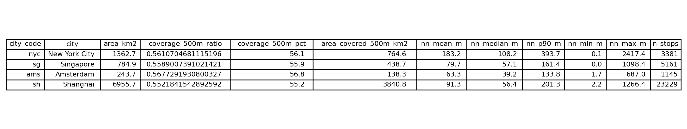

Results
Comparative Stats
This section presents a cross-city comparison of bus stop density and walk-based accessibility indicators. While the underlying methods are consistent across all cities, interpretation must consider each city’s unique transit system design, land-use context, and service philosophy.
1. Bus stop density
The figure below compares bus stop density (stops per km²) across the four cities.

Interpretation
The four cities show substantial variation in bus stop density:
Singapore (6.58 stops/km²) has the highest density, reflecting
its highly planned, fully government-coordinated trunk–feeder system.
Singapore’s Land Transport Authority places stops at regular intervals (~200–400 m), creating a uniformly fine-grained bus network optimized for walkability and MRT transfer.Amsterdam (4.7 stops/km²) also exhibits a dense stop pattern,
especially within its compact historical core. Its transit system is multi-modal (bus + tram + metro), and bus services supplement tram corridors, producing dense central coverage.Shanghai (3.34 stops/km²) appears moderate, but the number masks its huge geographic area (6955 km²).
Within the dense central districts (Puxi/Pudong), stop spacing is actually very tight, but the municipal boundary includes vast low-density industrial and rural zones, lowering the citywide average.New York City (2.48 stops/km²) shows the lowest density.
NYC buses primarily serve as a surface transit network parallel to the extensive subway system. Additionally, wide arterial blocks—especially in Manhattan and parts of Queens/Brooklyn—naturally result in fewer intersections and therefore fewer stop locations.
Key takeaway
Bus stop density reflects urban form and planning philosophy, not merely transit supply:
- Centralised planning → uniform high density (Singapore)
- Historic compactness + multimodal layering → medium high (Amsterdam)
- Very large administrative boundaries → moderate composite density (Shanghai)
- Subway-dominant network → lower bus density (NYC)
2. Density summary table
The table summarises total area, number of stops, and density for each city.

Interpretation
| City | Area (km²) | Stops | Density (per km²) | Interpretation |
|---|---|---|---|---|
| NYC | 1362.7 | 3381 | 2.48 | Low density, reflecting subway dominance; buses fill gaps in outer boroughs more than the Manhattan core. |
| Singapore | 784.9 | 5161 | 6.58 | National-level planning produces evenly distributed stops and short spacing. |
| Amsterdam | 243.7 | 1145 | 4.70 | Small, dense city with complementary tram/bus system. |
| Shanghai | 6955.7 | 23229 | 3.34 | High bus supply diluted across enormous urban–rural municipal territory. |
Urban-structure explanation
Administrative scale is critical:
Shanghai’s area is nearly 30× Amsterdam but does not have 30× more stops.Modal hierarchy affects bus density:
Cities where buses are primary transport (Singapore) naturally build higher stop density than cities where buses provide coverage between rail corridors (NYC).Street pattern differences:
- Grid-like cities (NYC) → fewer intersections per km²
- Organic/medieval European cores (Amsterdam) → more intersections → more stop opportunities
- Grid-like cities (NYC) → fewer intersections per km²
3. Detailed accessibility indicators
This table reports 500 m coverage, covered area, and nearest-neighbour distance statistics for each city.

High-level findings
Despite strong differences in bus stop density, all four cities achieve similar 500 m walking coverage (55–57%).
This is an important insight:
📌 High density does not automatically translate into proportionally higher coverage.
Interpretation by metric
A. 500m coverage ratio (55–57%)
| City | Coverage Ratio | Interpretation |
|---|---|---|
| Amsterdam (56.8%) | Slightly highest due to dense centre and small municipal area—bus stops can reach a large share of the city surface. | |
| NYC (56.1%) | Despite low stop density, NYC achieves good coverage because built-up land is concentrated and bus routes traverse dense blocks. | |
| Singapore (55.9%) | Even planning leads to consistent accessibility island-wide. | |
| Shanghai (55.2%) | Similar coverage, but diluted by massive suburban/rural tracts. |
Why similar?
Large uninhabited land (NYC parks, Shanghai farmland, Amsterdam waterways)
dilutes the ratio when calculated using full administrative boundaries.
Thus, coverage of populated areas is likely much higher.
B. Covered area (km²)
Unsurprisingly dominated by city size:
- Shanghai (3840 km²) dwarfs the others—indicating extensive surface transit.
- NYC (764.6 km²) also large due to long bus corridors through Bronx, Queens, and Brooklyn.
- Singapore (438.7 km²) matches its compact island size.
- Amsterdam (138.3 km²) is smallest but proportionally highly accessible.
C. Nearest-neighbour distance
This metric reflects bus stop spacing, a strong indicator of walkability.
| City | Mean NN Dist (m) | Interpretation |
|---|---|---|
| Amsterdam (63 m) | Exceptionally short spacing; bus and tram stops form a tight mesh. | |
| Singapore (79 m) | Short and regular stop spacing consistent with national standards. | |
| Shanghai (91 m) | Dense inner-city spacing but wider intervals in outer districts. | |
| NYC (183 m) | Longest spacing; wide blocks and the presence of the subway reduce need for close bus spacing. |
The 90th percentile values reinforce this pattern:
- NYC 393 m → Large variations between dense Manhattan vs. wide Queens/Brooklyn arterials
- Amsterdam 134 m, Singapore 161 m → Stable, predictable spacing
- Shanghai 201 m → Reflects mixed urban/suburban structure
D. Interpreting the patterns
Cities with integrated multimodal systems (Amsterdam, Singapore) show
uniformly short nearest-neighbour distances and fine-grained coverage.NYC’s long NN distances are a direct function of:
- subway dominance,
- large block lengths,
- a bus system designed for coverage—not fine-grained walkability.
Shanghai’s mixed-range NN distances reflect:
- highly urbanized districts with dense stops,
- large exurban areas with coarse spacing.
Summary of Cross-city Insights
1. High density ≠ high coverage
All four cities achieve similar 500 m coverage despite large differences in stop density.
2. Transit philosophy shapes the network
- Singapore: Regular spacing due to planned trunk–feeder design
- Amsterdam: Tight spacing in compact historic fabric
- NYC: Bus network plays secondary role next to subway
- Shanghai: Municipal boundaries hide large intra-city variation
3. Nearest-neighbour distances reveal more than density
NN distance is a better indicator of street-level accessibility than raw density.